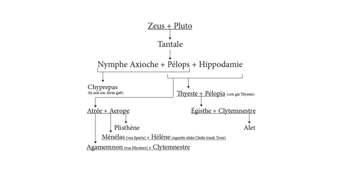

Atrée và Thyeste là hai anh em sinh đôi, con của người anh hùng vĩ đại Pélops. Nhẽ ra họ được sống một cuộc đời bình yên hạnh phúc, song vì cha họ xưa kia đã can tội bội ước và ám hại một người đã giúp đỡ mình lập được chiến công là người đánh xe ngựa cho vua Oenomaos tên là Myrtilos, cho nên cuộc đời của họ sống triền miên trong những tội ác và sự thù hằn. Thuở ấy Myrtilos đã giúp Pélops thắng trong cuộc đua xe ngựa với vua Oenomaos, nhờ đó, Pélops mới cưới được nàng Hippodamie, con gái nức tiếng xinh đẹp của nhà vua. Nhưng Pélops nuốt lời hứa, không trọng thưởng Myrtilos mà lại còn giết chết Myrtilos. Trước phút lâm chung, Myrtilos nguyền rủa Pélops rằng con cháu của Pélops sẽ vì tội ác đê tiện và xảo quyệt này mà phải chịu trọng tội đời đời, phải sống chìm đắm suốt đời trong tội ác đẫm máu gớm ghê và sự thù hằn dai dẳng.
Tội ác đầu tiên của dòng họ này là việc giết Chrysippe. Trong một cuộc tình duyên với tiên nữ Nymphe Axioche, Pélops sinh ra được một người con trai tên là Chrysippe. Do được Pélops yêu quý nên Chrysippe trở thành cái gai trước mắt hai anh em Atrée và Thyeste. Được mẹ là Hippodamie xúi giục, anh em Atrée và Thyeste đã hãm hại Chrysippe, nhằm thanh trừ một kẻ thù, một đối thủ trong cuộc thừa kế ngai vàng sau này. Nhưng hành động tàn bạo và ám muội của hai anh em bị Pélops phát giác. Sợ bị trừng phạt, hai anh em chạy trốn sang đô thành Mycènes cầu xin vua Sthénélos, con trai của Persée, che chở. Cuộc sống của hai anh em sinh đôi này ở trên đất Mycènes kéo dài không rõ được bao lâu thì bữa kia xảy ra một biến cố khá quan trọng, một biến cố mở đầu cho những mối thù và những cuộc trả thù vô cùng kinh khủng sau này. Đó là việc nhà vua Sthénélos băng hà, ngai vàng của đất Mycènes không người thừa kế. Không phải Sthénélos không có con trai, con trai của vị vua này chính là Eurysthée, kẻ đã hành hạ Héraclès suốt mười hai năm trời, nhưng lúc Sthénélos băng hà thì Eurysthée không còn sống. Trong cuộc giao tranh với những Héracleidae, Eurysthée đã bị Iolaos bắt sống và đưa về trừng trị. Xét theo huyết thống thì hai anh em Atrée và Thyeste là người gần gũi hơn cả, vì nàng Nicippé, vợ của vua Sthénélos, chính là em ruột của họ. Nhưng ngai vàng chỉ có một mà họ lại là hai. Nhân dân Mycènes không biết phân xử thế nào. Các vị bô lão phải đến cầu xin thần thánh ban cho một lời chỉ dẫn. Lời thần truyền phán: “Hãy truyền ngôi cho người nào trong tay có Bộ lông Cừu vàng”. Biết được lời thần ban bố như vậy, Atrée vô cùng sung sướng. Bộ lông Cừu vàng là báu vật của chàng, chàng hiện nắm giữ nó trong tay. Lai lịch của nó như sau:
Thuở xưa khi còn trẻ Atrée chỉ làm một gã chăn chiên, trong đàn súc vật dê cừu đông đúc của mình, thế nào một hôm Atrée bắt gặp một chú cừu con xinh đẹp. Quý hơn nữa, chú cừu ấy lại có bộ lông vàng. Từ xưa đến nay chưa bao giờ Atrée gặp một con cừu đẹp như thế. Bộ lông của nó vàng rượi, óng ả, đẹp đẽ vô ngần, nhất là những khi mặt trời chếch bóng, ánh nắng nhạt của buổi chiều hôm ngả dài trên lưng đàn súc vật đang lững thững về chuồng, thì bộ lông vàng của chú cừu đó óng ánh hẳn lên, rực rỡ hẳn lên. Năm đó, Atrée phải làm lễ hiến tế cho nữ thần Artémis; nhẽ ra chàng phải dâng cho nữ thần bộ lông vàng của chú cừu đó, vì hiến tế cho các vị thần phải thành kính dâng lên những vật gì quý báu nhất, nhưng Atrée không dâng cho nữ thần Artémis chú cừu có bộ lông vàng đó. Chàng thay thế bằng một lễ vật khác, rồi giết con cừu giữ lại bộ lông vàng cho mình. Chàng bỏ Bộ lông Cừu vàng vào trong một chiếc hòm kín có khóa cẩn thận và giấu kỹ điều bí mật này, không cho ai biết ngoài người vợ thân thiết của chàng là nàng Érope xinh đẹp. Đó, lai lịch Bộ lông Cừu vàng là như thế.
Hôm sau trước hội nghị nhân dân, các bô lão công bố lời phán truyền của thần thánh. Những người đem trình Bộ lông Cừu vàng trước hội nghị nhân dân lại không phải và Atrée mà là Thyeste. Vì sao lại có chuyện lạ lùng như vậy? Nguyên do là biết được lời phán truyền của thần thánh, Érope, vốn tư thông với Thyeste, đã lấy cắp Bộ lông Cừu vàng trao cho Thyeste, và Thyeste lên làm vua ở Mycènes.
Thất bại, Atrée cầu khấn thần Zeus, xin thần ban cho một điềm chứng minh chàng là người thắng cuộc, chính chàng và người được thừa kế ngôi báu ở Mycènes. Thần Zeus chấp nhận lời cầu xin. Thần đảo lại đường đi của thần Mặt trời-Hélios khiến cho mặt trời bỗng dưng mọc ở hướng tây và lặn ở hướng đông. Chao, sao mà kỳ lạ quá thế này, một sự việc lạ lùng chưa từng thấy! Chắc chắn có sự gì đây. Nhân dân Mycènes mời các bô lão và các nhà tiên tri đến để tường giải sự việc lạ lùng mà theo họ hẳn là một điềm báo lành ít, dữ nhiều. Cuối cùng những người dân Mycènes biết rằng mình đã lầm lẫn, lầm lẫn như thần Mặt trời-Hélios đã lầm lẫn đường đi. Họ phế truất Thyeste và đưa Atrée lên ngôi. Chỗ này có chuyện kể, sau khi Thyeste lên ngôi, thần Zeus sai thần Hermès xuống báo mộng cho Atrée biết, hãy thách thức, đánh cuộc với Thyeste trước hội nghị nhân dân: nếu mặt trời mọc ở hướng Tây và lặn ở hướng Đông thì Thyeste sẽ phải nhường lại ngôi báu cho Atrée. Chấp nhận lời thách thức ngược đời, Thyeste đinh ninh, chỉ có người mất trí mới tin được Atrée thắng cuộc. Nhưng sáng hôm sau thật kỳ lạ, mặt trời mọc ở hướng Tây. Trước hội nghị nhân dân, Thyeste đành chịu thua cuộc và phải rời khỏi Mycènes. Căm giận người vợ phản bội, Atrée ra lệnh ném Érope, con của Catrée, cháu của Minos, xuống biển.
Thyeste bị trục xuất khỏi Mycènes lòng tràn đầy uất hận. Y bắt cóc một đứa con trai nhỏ của Atrée đem theo. Ở nơi đất khách quê người, y nuôi nấng, dạy dỗ đứa trẻ với một ý đồ nham hiểm: dùng nó để trả thù Atrée. Y đã xóa bỏ mọi dấu vết về tông tích đứa bé, làm cho nó đinh ninh rằng y là cha đẻ của nó. Y dựng lên một hình ảnh đáng ghét, đáng ghê tởm về Atrée. Năm tháng trôi đi, đứa bé lớn lên và trở thành một chàng trai tuấn tú. Thyeste giao cho nó, tên gọi là Plisthène, nhiệm vụ trở về Mycènes để giết Atrée. Nhưng Plisthène không thực hiện được nghĩa vụ mà Thyeste giao cho. Mưu đồ đen tối của Plisthène bị phát giác, và trong một cuộc xung đột chàng ta bị ngã gục đước mũi gươm của Atrée. Hạ xong địch thủ, xem xét kỹ lại dấu vết cũ trên người, Atrée mới biết rằng đây chính là đứa con của mình mất tích từ năm xưa. Đau đớn, cay đắng mà không biết than thở với ai, Atrée lập mưu trả thù lại Thyeste. Giả vờ hòa giải với người em, tạo ra một bầu không khí thuận lợi để thực hiện mưu kế trả thù.
Một hôm, Atrée cho người đến nói với Thyeste rằng mình đã nguôi mối giận xưa kia và bây giờ muốn hai anh em hòa giải và chung sống với nhau. Nhận lời mời của Atrée, Thyeste đưa cả gia quyến về Mycènes. Có ai ngờ đâu lòng người nham hiểm khôn lường. Atrée đã làm một việc tàn ác, độc địa chưa từng thấy, tàn ác đến nỗi xưa kia khi nghe kể đến đoạn này, nhiều người phải rùng mình nhắm mắt kinh hãi. Atrée lừa lúc Thyeste vắng nhà, bắt ngay ba đứa cháu ruột của mình, con của Thyeste, làm thịt. Sau đó gã mời Thyeste sang dự tiệc. Thyeste không hề biết. Y cứ ngồi vào bàn tiệc điềm nhiên thưởng thức những món ăn ngon lành làm bằng thịt con mình. Cảnh tượng kinh khủng đó khiến cho Zeus vô cùng phẫn nộ. Thần liền dồn mây, giáng sấm sét biểu thị sự tức giận của mình. Thần Mặt trời-Hélios, người chẳng để lọt qua đôi mắt một sự việc gì, cũng không đủ can đảm để nhìn cảnh bố ngồi chè chén thịt con một cách ung dung thú vị như thế. Thần phải bỏ dở cuộc hành trình, quay ngay cỗ xe vàng chói lọi của mình trở về phương đông.
Chè chén một lúc, Thyeste linh cảm thấy có sự chẳng lành, bỗng cất tiếng hỏi Atrée:
- Hỡi Atrée thân mến! Ta vô cùng cảm ơn bác đã mời ta một bữa tiệc thịnh soạn mà trong đời ta chưa từng được biết đến. Nhưng ta xin bác đã rộng lòng lại rộng lòng thêm chút nữa. Bác cho các cháu của bác được cùng dự bữa tiệc ngon lành này thì quý hóa quá.
Atrée vui vẻ trả lời:
- Hỡi Thyeste người em sinh đôi của ta! Điều đó chẳng có gì đáng làm ta quản ngại. Ta sẽ cho gọi các cháu đến ngay. Atrée vẫy tay ra hiệu cho gia nhân thực thi đúng như sự sắp xếp của mình. Lập tức tên hầu bưng vào một mâm lớn đậy kín. Atrée đích thân mở ra cho Thyeste xem. Đó là ba cái đầu của ba đứa con của Thyeste. Thyeste hoảng hồn, rú lên, gào thét, nguyền rủa. Y biết y đã bị trả thù, đã trúng mưu của Atrée. Y van xin Atrée ban cho mình thi hài ba đứa con của mình để làm lễ an táng. Atrée cười ha hả đáp:
- Ngươi chẳng phải lo chuyện đó nữa. Chính ngươi đã an táng chúng vào trong bụng của ngươi rồi.
Thyeste rụng rời, kinh hãi. Y gào rống lên như điên. Y vật vã bứt đầu bứt tóc. Y xô đổ bàn tiệc và cắm đầu chạy. Vừa chạy y vừa nguyền rủa Atrée và con cháu của gã sẽ phải chịu thảm họa đời đời. Chạy một hồi lâu, Thyeste định thần lại. Y bây giờ chỉ có một con đường là sang xứ Épire xin nhà vua Thesprotos cho trú ngụ. Ở đây, tại đô thành Sicyon, Thyeste tính mưu kế trả thù. Thyeste sang trú ngụ tại Sicyon ngày đêm nung nấu mối thù không đội trời chung với Atrée. Muốn gì thì gì, dù đất có lở, trời có sập đi chăng nữa thì Thyeste cũng phải trả được thù, rửa được nhục mới thôi. Y cầu khấn thần thánh. Lời sấm truyền của số mệnh thật là ác nghiệt: người lãnh sứ mạng trả thù cho Thyeste không thể là ai khác ngoài đứa con trai do dòng máu của Thyeste hòa hợp với người con gái của chính Thyeste sinh ra.
Làm theo điều chỉ dẫn của số mệnh, một đêm tối trời, lừa Pélopia, con gái mình, đến đền thờ dâng lễ, Thyeste bí mật lên đền và dùng sức mạnh cưỡng bức, thực hiện đúng như lời sấm truyền. Pélopia chống cự song không nổi. Tuy nhiên, trong lúc kẻ bạo ngược vô ý, nàng đã rút được thanh gươm của hắn. Ít lâu sau, Pélopia có mang và sinh ra một đứa bé. Sợ tai tiếng nàng đem bỏ đứa bé vào rừng, đứa bé mà nàng không biết mặt cha nó là ai. Sau đó nàng bỏ nhà ra đi, trở về đất Mycènes. Tới đây Pélopia lại kết duyên với Atrée. Nàng không quên thuật lại cho chồng biết những biến cố đã xảy ra với đời mình, đưa mình trở lại đất Mycènes này. Nghe thuật chuyện xong lập tức Atrée cho người đi tìm đứa bé. Sau nhiều ngày tìm tòi vất vả trong rừng sâu, hỏi dò hết nơi này nơi khác, cuối cùng người ta đón được chú bé từ tay một người chăn chiên đưa về dâng cho Atrée. Atrée nuôi nấng chú bé như con đẻ của mình và chính chú bé, Égisthe cũng không bao giờ biết đến câu chuyện rắc rối, phức tạp về lai lịch và nguồn gốc của mình. Nhiều năm trôi đi, song Atrée vẫn nuôi giữ mối hằn thù với người em ruột sinh đôi của mình là Thyeste. Atrée nhất quyết phải truy tìm ra tông tích của Thyeste để trừ khử tránh mọi hậu họa sau này. Tình cờ bữa kia do một chuyện ngẫu nhiên, hai người con trai của Atrée là Agamemnon và Ménélas phát hiện ra nơi ở của Thyeste. Họ lập tức xin với vua cha cho quân đi vây bắt, và kết quả họ đã giải được kẻ thù của cha mình về. Atrée vui mừng khôn xiết, ra lệnh tống giam Thyeste vào ngục tối chờ ngày hành hình. Có chuyện lại kể, Atrée giao cho Égisthe nhiệm vụ truy tìm Thyeste và Égisthe đã bắt được Thyeste ở Delphes giải về cho cha. Lệnh hành quyết giao cho Égisthe thi hành. Chợt Thyeste nhìn thấy thanh gươm Égisthe cầm tay. Y xin phép được hỏi, ai đã ban cho Égisthe thanh gươm ấy, một thanh gươm vô cùng quý giá mà trên đời này không dễ mấy người có được.
- Ngươi hỏi làm gì? Chính mẹ ta đã trao cho ta thanh gươm quý báu này đấy! - Égisthe hống hách trả lời. - Hay ngươi muốn chọn một thanh gươm khác tồi hơn để chết thì ta cũng sẵn sàng.
Thyeste van xin Égisthe hãy gia ân cho mình được phép gặp mẹ chàng một chút trước khi nhắm mắt lìa đời. Một đòi hỏi không có gì quá đáng của một tên tử tù. Égisthe nghĩ thế, và gật đầu ưng thuận, sai quân hầu đi mời ngay Pélopia đến. Gặp Pélopia, Thyeste liền kể cho hai mẹ con biết rõ sự thật, một sự thật rất khắc nghiệt do bàn tay độc địa của số mệnh tạo nên. Nghe xong câu chuyện, Pélopia hét lên một tiếng hãi hùng. Nàng giật phắt thanh gươm trên tay Égisthe đâm vào ngực tự sát. Còn Égisthe như một con thú bị trúng tên, rút ngay thanh gươm đẫm máu ở ngực mẹ mình ra và lao đầu chạy đi tìm Atrée, và cũng bằng lưỡi gươm oan nghiệt đó, chàng đã kết liễu đời Atrée khi Atrée đang làm lễ trên bờ sông, đang vui mừng tưởng như đã giết được Thyeste. Từ đấy hai cha con Thyeste và Égisthe trị vì trên đô thành Mycènes ở đất Argolide.
Gia đình tan nát, hai anh em Agamemnon và Ménélas mà những người Hy Lạp xưa kia thường gọi là Atrides nghĩa là những người con của Atrée, phải chạy sang xin nhà vua Tyndare trị vì ở đô thành Sparte cho nương náu. Nhà vua giàu lòng thương người đã cho hai anh em Atrides trú ngụ. Chẳng những thế nhà vua lại còn gả hai con gái của mình cho anh em Atrides. Clytemnestre lấy Agamemnon. Hélène lấy Ménélas. Sau một thời gian nương nhờ ở Sparte, Agamemnon được Tyndare giúp đỡ đã đem quân về Mycènes trừng trị Thyeste, khôi phục được quyền thế. Égisthe, con trai của Thyeste trốn thoát. Từ đó Agamemnon lên làm vua ở Mycènes, một đô thành nổi tiếng về những kho vàng và cung điện to lớn, đẹp đẽ. Còn Ménélas ở lại Sparte, kế đến khi Tyndare qua đời không có con trai thừa kế ngôi báu (anh em Dioscures đều tử trận), Ménélas bèn lên ngôi kế nghiệp trở thành vị vua của đô thành Sparte, một đô thành nổi tiếng trong giới cổ đại về tinh thần thượng võ và lối sống nghiêm ngặt khắc khổ.
Gia hệ người anh hùng Tantale
